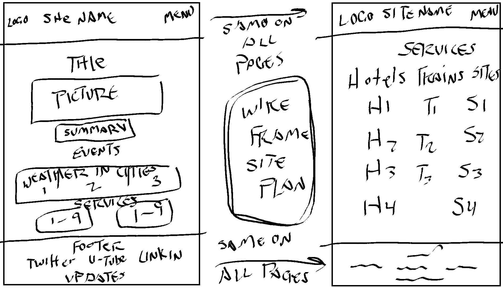

1. Site Name: Travel Hokkaido
The website is named "Travel Hokkaido" and focuses on providing information about travel destinations, events, services, and cultural experiences in Hokkaido, Japan.
2. Site Purpose
The purpose of the website is to provide comprehensive information about travel destinations, events, services, and cultural experiences in Hokkaido, Japan. It aims to assist travelers in planning their trips and discovering the unique aspects of the region.
3. Scenarios
Scenario 1: "What are some popular destinations to travel to?" Travelers want to know what are some of the more popular or less traveled locations, we can provide detailed information and direct them on who to contact for further assistance.
Scenario 2: "What services are available for travelers?" Users may want to know about accommodations, transportation, and other services. The website provides detailed information and contact points for these services.
4. Color Scheme
The color scheme of the website is designed to reflect the natural beauty and cultural heritage of Hokkaido. It includes a combination of cool and warm tones to create a visually appealing and harmonious experience for users.
More information will be found in the project-small.css file. Some being used are primary-color: #4b7cb4, accent: #e8e8e8, light-bg: #e9e9e9, card-bg: #FFFFFF, text-color: #2d3056, light-gray: #E9ECEF, border-color: #e2dee6, success-green: #28A745
5. Typography
The website uses the "Roboto Slab" font family for its typography, providing a clean and readable design. Different font weights are used to create visual hierarchy and emphasis throughout the site.
6. Wireframe
The wireframe of the website outlines the structure and layout of the various pages, including the header, navigation, main content sections, and footer. It serves as a blueprint for the design and development process, ensuring a cohesive and user-friendly experience.

7. Project Summary
The site plan provides an overview of the website's structure, design elements, and content organization. It serves as a guide for the development process and ensures that all aspects of the website are well-planned and cohesive.